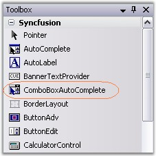
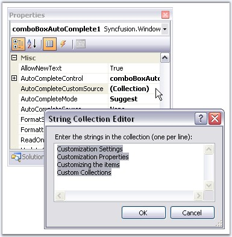
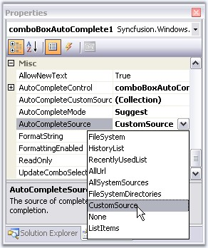
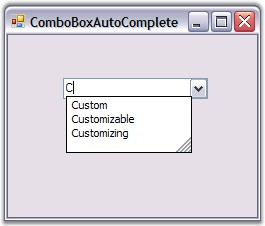

Implementing a simple ComboBoxAutoComplete can be done in the following ways.
This tutorial illustrates the usage of the ComboBoxAutoComplete control without any external datasource.
 Note : This is applicable only for
VS2005.
Note : This is applicable only for
VS2005.
1. Drag-and-drop a ComboBoxAutoComplete control from the toolbox onto the form.

Figure 131: ComboBoxAutoComplete control in Toolbox
2. Add items to ComboBoxAutoComplete using AutoCompleteCustomSource collection editor as shown below.

Figure 132: Adding CustomSource to ComboBox
3. Specify the text completion behavior of the control using ComboBoxAutoComplete.AutoCompleteMode. The value of AutoCompleteMode should not be none in this case. SeeSee Source for AutoComplete Control to know the different AutoCompleteModes.
4. Set AutoCompleteSource to CustomSource as shown below. SeeSee Source for AutoComplete Control to know the different AutoComplete sources.

Figure 133: Setting CustomSource
Output
At runtime, type 'C' in the display area of ComboBoxAutoComplete, you will see the autocompletion behavior as shown below.

Figure 134: ComboBoxAutoComplete with CustomSource
The embedded AutoComplete control in a ComboBoxAutoComplete control is exposed through the AutoCompleteControl property. The Datasource property of the AutoCompleteControl specifies the data that will be used for the auto completion of the combo box. It can be created programmatically as follows.
1. Include the required namespace.
|
[C#]
using Syncfusion.Windows.Forms.Tools; |
|
[VB.NET]
Imports Syncfusion.Windows.Forms.Tools |
2. Create an instance of the ComboBoxAutoComplete control class.
|
[C#]
private Syncfusion.Windows.Forms.Tools.ComboBoxAutoComplete comboBoxAutoComplete1; this.comboBoxAutoComplete1=new Syncfusion.Windows.Forms.Tools.ComboBoxAutoComplete(); |
|
[VB.NET]
Private comboBoxAutoComplete1 As Syncfusion.Windows.Forms.Tools.ComboBoxAutoComplete Me.comboBoxAutoComplete1 = New Syncfusion.Windows.Forms.Tools.ComboBoxAutoComplete() |
3. Set data source and add the control to the form.
|
[C#]
this.comboBoxAutoComplete1.AutoCompleteCustomSource.AddRange(new string[] { "Custom", "Customizing", "Customizable"}); this.comboBoxAutoComplete1.AutoCompleteMode = System.Windows.Forms.AutoCompleteMode.SuggestAppend; this.comboBoxAutoComplete1.AutoCompleteSource = System.Windows.Forms.AutoCompleteSource.CustomSource;
this.Controls.Add(this.comboBoxAutoComplete1); |
|
[VB.NET]
Me.comboBoxAutoComplete1.AutoCompleteCustomSource.AddRange(New String() {"Custom", "Customizing", "Customizable"}) Me.comboBoxAutoComplete1.AutoCompleteMode = System.Windows.Forms.AutoCompleteMode.SuggestAppend Me.comboBoxAutoComplete1.AutoCompleteSource = System.Windows.Forms.AutoCompleteSource.CustomSource
Me.Controls.Add(Me.comboBoxAutoComplete1) |
4. Run the application.
Figure 135: ComboBoxAutoComplete with CustomSource
See Also